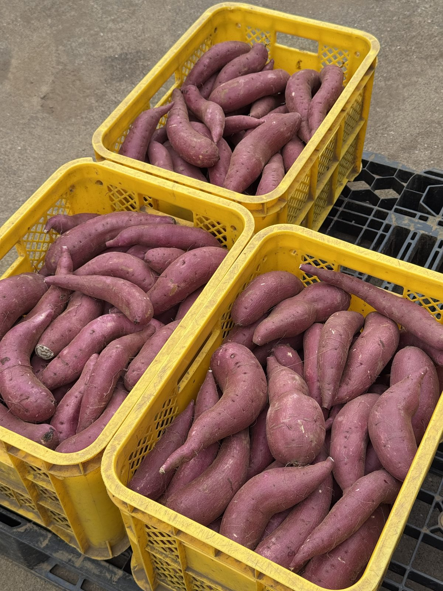

加工向けさつまいも
B品・訳あり品のご案内
お菓子屋さん、パン屋さん、カフェ、焼き芋屋さんの仕込みに。
見た目の理由で規格から外れたさつまいもを、お手頃な価格でお分けしています。

不揃いだけど、
味はそのままです。
皮をむいて、裏ごしして、ペーストにしてしまう工程なら、芋の見た目は仕上がりに関係ありません。それなら、浮いた分は素材の量や品質にまわしてほしい。そう考えて、B品・訳あり品をお分けしています。育てた畑も掘った日もA品と同じ、同じさつまいもです。
お見積もりはその場で計算できます
品種・規格・数量・お届け先を選ぶと、芋代＋送料の総額がすぐに分かります。まとまった数量や継続のお取引もご相談ください。
こんな加工に使われています
実際にお取引先で作られているもの、加工に向いている用途の一例です。
B品と訳あり品のちがい
B品
傷や曲がりなどがあり、A品にはできないもの。サイズをご指定いただけます。皮ごと使う焼き芋・干し芋にもお使いいただけます。
訳あり品
大きな曲がりや傷、二股など、B品の規格にもならないもの。サイズのご指定はできません。皮をむいてペーストにする加工に向いています。
農家から直接仕入れる、という選択
A品ではなくB品・訳あり品を、産地から直接。仕入れの考え方を少し変えるだけで、原価もつくり方も変わります。
A品に比べて訳あり品は最大で58%お得。農家が直接卸すから、スイーツづくりなどの経費削減につながります。同じ畑の、同じ日に掘ったさつまいもです。
中間を通さない分、原価が下がる
畑から直接お届けするので、市場や仲卸を経由する分のコストがかかりません。加工に使う量が多いお店ほど差が出ます。
品種・状態を選んで仕入れられる
ねっとりのべにはるか、なめらかなシルクスイート。つくるものに合わせて品種を選べます。B品はサイズのご指定も可能です。
産地と作り手が、そのまま伝えられる
千葉県香取市・80年続く認定農家の芋です。日本さつまいもサミットでの受賞歴もあり、お客様への説明やメニュー表記にそのままお使いいただけます。
使い切れる形で、まっすぐ届く
収穫・貯蔵の状況をこちらで把握しているので、時期や数量のご相談ができます。規格外を活用することは、畑の廃棄を減らすことにもつながります。
ご注文について
卸の単位 5kg箱単位でのお届けです。訳あり品は5kgから、B品は20kgから承っております。20kg以下のご購入はオンラインストアもご利用いただけます。
品種と時期 シルクスイートは新芋が8月〜9月、熟成芋が10月〜1月ごろ。べにはるかは2月〜5月ごろ。年間を通してどちらかをご用意できます。
お見積もり・送料 単価は規格・サイズによって異なります。見積もりシミュレーションで芋代＋送料の総額をその場で確認いただけます。芋代は軽減税率8%、送料は10%です。
数量について 訳あり品は収穫・選別の状況により数量に限りがございます。B品は基本的に数量の制限はございません。訳あり品の継続的なお取引をご希望の方は、お問い合わせよりご相談ください。